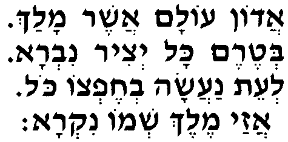
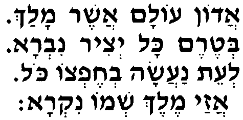
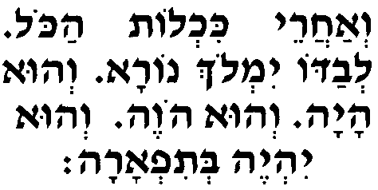
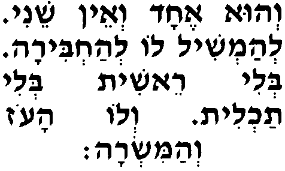
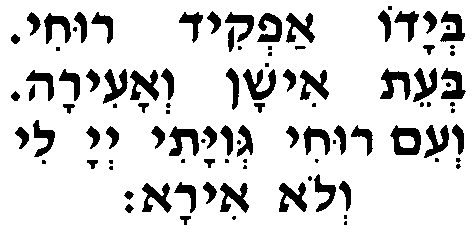

Адон олам - молитва, в которой поэтически выражено отношение евреев к Властителю мира. |
прослушать    |
|
Веахарэ́й кихло́т ако́ль левадо́ йимло́х нора́, |
прослушать  |
|
Веу́ эха́д веэ́н шэни́ леамши́ль ло леахби́ра, Он единственный, и нет другого, чтобы сравниться с Ним или уподобиться. бели́ рэши́т бели́ тахли́т вело́ ао́з веамисра́. Нет Ему ни начала, ни конца. У Него - сила и власть. |
 |
|
Беядо́ афки́д рухи́ беэ́т иша́н веаи́ра Его руке я вверяю свою душу на время сна и по пробуждении, веи́м рухи́ гевияти́, А-дона́й ли вело́ ира́. а вместе с душою - тело. Г-сподь со мной - и я не устрашусь! |
 |